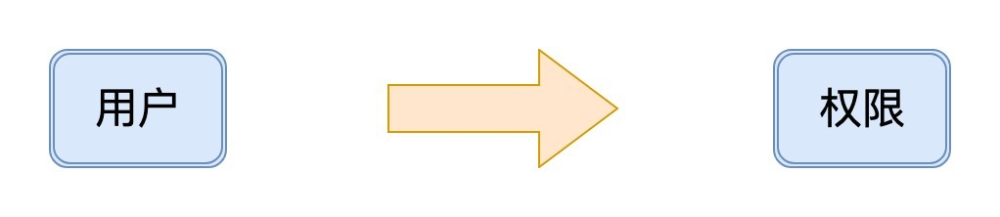
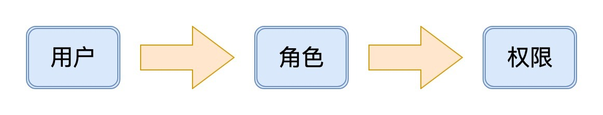
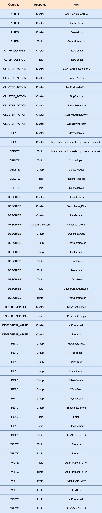
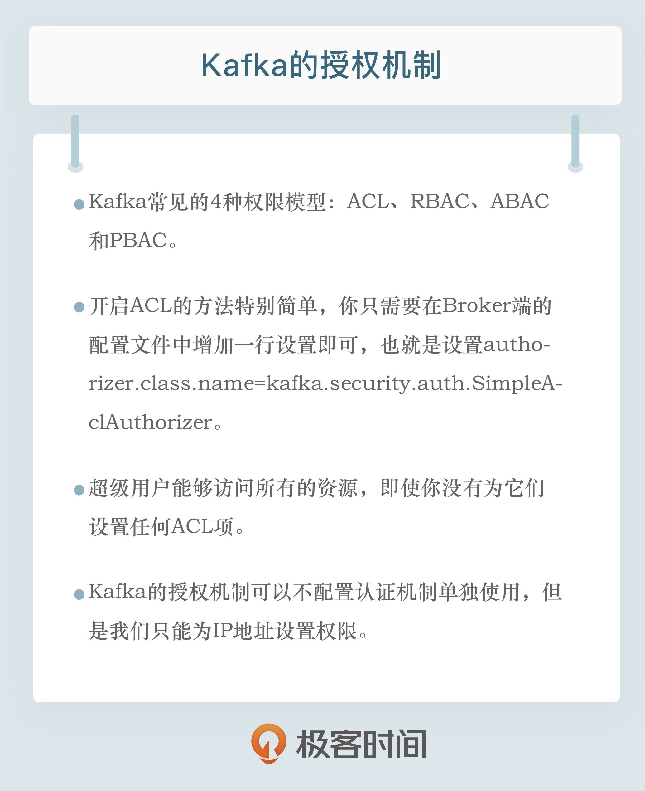

- 00 开篇词 为什么要学习Kafka？.md.html
- 01 消息引擎系统ABC.md.html
- 02 一篇文章带你快速搞定Kafka术语.md.html
- 03 Kafka只是消息引擎系统吗？.md.html
- 04 我应该选择哪种Kafka？.md.html
- 05 聊聊Kafka的版本号.md.html
- 06 Kafka线上集群部署方案怎么做？.md.html
- 07 最最最重要的集群参数配置（上）.md.html
- 08 最最最重要的集群参数配置（下）.md.html
- 09 生产者消息分区机制原理剖析.md.html
- 10 生产者压缩算法面面观.md.html
- 11 无消息丢失配置怎么实现？.md.html
- 12 客户端都有哪些不常见但是很高级的功能？.md.html
- 13 Java生产者是如何管理TCP连接的？.md.html
- 14 幂等生产者和事务生产者是一回事吗？.md.html
- 15 消费者组到底是什么？.md.html
- 16 揭开神秘的“位移主题”面纱.md.html
- 17 消费者组重平衡能避免吗？.md.html
- 18 Kafka中位移提交那些事儿.md.html
- 19 CommitFailedException异常怎么处理？.md.html
- 20 多线程开发消费者实例.md.html
- 21 Java 消费者是如何管理TCP连接的.md.html
- 22 消费者组消费进度监控都怎么实现？.md.html
- 23 Kafka副本机制详解.md.html
- 24 请求是怎么被处理的？.md.html
- 25 消费者组重平衡全流程解析.md.html
- 26 你一定不能错过的Kafka控制器.md.html
- 27 关于高水位和Leader Epoch的讨论.md.html
- 28 主题管理知多少.md.html
- 29 Kafka动态配置了解下？.md.html
- 30 怎么重设消费者组位移？.md.html
- 31 常见工具脚本大汇总.md.html
- 32 KafkaAdminClient：Kafka的运维利器.md.html
- 33 Kafka认证机制用哪家？.md.html
- 34 云环境下的授权该怎么做？.md.html
- 35 跨集群备份解决方案MirrorMaker.md.html
- 36 你应该怎么监控Kafka？.md.html
- 37 主流的Kafka监控框架.md.html
- 38 调优Kafka，你做到了吗？.md.html
- 39 从0搭建基于Kafka的企业级实时日志流处理平台.md.html
- 40 Kafka Streams与其他流处理平台的差异在哪里？.md.html
- 41 Kafka Streams DSL开发实例.md.html
- 42 Kafka Streams在金融领域的应用.md.html
- 加餐 搭建开发环境、阅读源码方法、经典学习资料大揭秘.md.html
- 结束语 以梦为马，莫负韶华！.md.html
34 云环境下的授权该怎么做？
你好，我是胡夕。今天我要分享的主题是：Kafka 的授权机制。
什么是授权机制？
我们在上一讲中花了不少时间讨论 Kafka 的认证机制，今天我们来看看 Kafka 的授权机制（Authorization）。所谓授权，一般是指对与信息安全或计算机安全相关的资源授予访问权限，特别是存取控制。
具体到权限模型，常见的有四种。
- ACL：Access-Control List，访问控制列表。
- RBAC：Role-Based Access Control，基于角色的权限控制。
- ABAC：Attribute-Based Access Control，基于属性的权限控制。
- PBAC：Policy-Based Access Control，基于策略的权限控制。
在典型的互联网场景中，前两种模型应用得多，后面这两种则比较少用。
ACL 模型很简单，它表征的是用户与权限的直接映射关系，如下图所示：

而 RBAC 模型则加入了角色的概念，支持对用户进行分组，如下图所示：

Kafka 没有使用 RBAC 模型，它用的是 ACL 模型。简单来说，这种模型就是规定了什么用户对什么资源有什么样的访问权限。我们可以借用官网的一句话来统一表示这种模型：“Principal P is [Allowed/Denied] Operation O From Host H On Resource R.” 这句话中出现了很多个主体，我来分别解释下它们的含义。
- Principal：表示访问 Kafka 集群的用户。
- Operation：表示一个具体的访问类型，如读写消息或创建主题等。
- Host：表示连接 Kafka 集群的客户端应用程序 IP 地址。Host 支持星号占位符，表示所有 IP 地址。
- Resource：表示 Kafka 资源类型。如果以最新的 2.3 版本为例，Resource 共有 5 种，分别是 TOPIC、CLUSTER、GROUP、TRANSACTIONALID 和 DELEGATION TOKEN。
当前，Kafka 提供了一个可插拔的授权实现机制。该机制会将你配置的所有 ACL 项保存在 ZooKeeper 下的 /kafka-acl 节点中。你可以通过 Kafka 自带的 kafka-acls 脚本动态地对 ACL 项进行增删改查，并让它立即生效。
如何开启 ACL？
在 Kafka 中，开启 ACL 的方法特别简单，你只需要在 Broker 端的配置文件中增加一行设置即可，也就是在 server.properties 文件中配置下面这个参数值：
authorizer.class.name=kafka.security.auth.SimpleAclAuthorizer
authorizer.class.name 参数指定了 ACL 授权机制的实现类。当前 Kafka 提供了 Authorizer 接口，允许你实现你自己的授权机制，但更常见的做法，还是直接使用 Kafka 自带的SimpleAclAuthorizer 实现类。一旦设置好这个参数的值，并且启动 Broker 后，该 Broker 就默认开启了 ACL 授权验证。在实际生产环境中，你需要为集群中的每台 Broker 都做此设置。
超级用户（Super User）
在开启了 ACL 授权之后，你还必须显式地为不同用户设置访问某项资源的权限，否则，在默认情况下，没有配置任何 ACL 的资源是不能被访问的。不过，这里也有一个例外：超级用户能够访问所有的资源，即使你没有为它们设置任何 ACL 项。
那么，我们如何在一个 Kafka 集群中设置超级用户呢？方法很简单，只需要在 Broker 端的配置文件 server.properties 中，设置 super.users 参数即可，比如：
super.users=User:superuser1;User:superuser2
注意，如果你要一次性指定多个超级用户，那么分隔符是分号而不是逗号，这是为了避免出现用户名中包含逗号从而无法分割的问题。
除了设置 super.users 参数，Kafka 还支持将所有用户都配置成超级用户的用法。如果我们在 server.properties 文件中设置 allow.everyone.if.no.acl.found=true，那么所有用户都可以访问没有设置任何 ACL 的资源。不过，我个人不太建议进行这样的设置。毕竟，在生产环境中，特别是在那些对安全有较高要求的环境中，采用白名单机制要比黑名单机制更加令人放心。
kafka-acls 脚本
在了解了 Kafka 的 ACL 概念之后，我们来看一下如何设置它们。当前在 Kafka 中，配置授权的方法是通过 kafka-acls 脚本。举个例子，如果我们要为用户 Alice 增加了集群级别的所有权限，那么我们可以使用下面这段命令。
$ kafka-acls --authorizer-properties zookeeper.connect=localhost:2181 --add --allow-principal User:Alice --operation All --topic '*' --cluster
在这个命令中，All 表示所有操作，topic 中的星号则表示所有主题，指定 --cluster 则说明我们要为 Alice 设置的是集群权限。
这个脚本的参数有很多，我们再来看看它的另一个常见用法。
$ bin/kafka-acls --authorizer-properties zookeeper.connect=localhost:2181 --add --allow-principal User:'*' --allow-host '*' --deny-principal User:BadUser --deny-host 10.205.96.119 --operation Read --topic test-topic
User 后面的星号表示所有用户，allow-host 后面的星号则表示所有 IP 地址。这个命令的意思是，允许所有的用户使用任意的 IP 地址读取名为 test-topic 的主题数据，同时也禁止 BadUser 用户和 10.205.96.119 的 IP 地址访问 test-topic 下的消息。
kafka-acls 脚本还有其他的功能，比如删除 ACL、查询已有 ACL 等。它们的实际用法与上面这条命令类似，我在这里就不一一列举了，你可以使用 kafka-acls.sh 来查询它的所有用法。
ACL 权限列表
刚才的这两条命令，分别涉及了主题的集群权限和读权限。你可能会问，Kafka 到底提供了多少种 ACL 权限呢？我们一起来看看下面这张表格，它完整地展示了 Kafka 所有的 ACL 权限。

看到这么大一张表格，你是不是很惊讶？其实，这恰好证明 Kafka 当前提供的授权机制是非常细粒度的。现在，我来跟你分享一下这个表格的使用方法。
举个例子，假如你要为你的生产者程序赋予写权限，那么首先，你要在 Resource 列找到 Topic 类型的权限，然后在 Operation 列寻找 WRITE 操作权限。这个 WRITE 权限是限制 Producer 程序能否向对应主题发送消息的关键。通常情况下，Producer 程序还可能有创建主题、获取主题数据的权限，所以 Kafka 为 Producer 需要的这些常见权限创建了快捷方式，即 --producer。也就是说，在执行 kafka-acls 命令时，直接指定 --producer 就能同时获得这三个权限了。 --consumer 也是类似的，指定 --consumer 可以同时获得 Consumer 端应用所需的权限。
授权机制能否单独使用？
关于授权，有一个很常见的问题是，Kafka 授权机制能不配置认证机制而单独使用吗？其实，这是可以的，只是你只能为 IP 地址设置权限。比如，下面这个命令会禁止运行在 127.0.0.1IP 地址上的 Producer 应用向 test 主题发送数据：
$ bin/kafka-acls.sh --authorizer-properties zookeeper.connect=localhost:2181 --add --deny-principal User:* --deny-host 127.0.0.1 --operation Write --topic test
$ bin/kafka-console-producer.sh --broker-list localhost:9092 --topic test
>hello
[2019-07-16 10:10:57,283] WARN [Producer clientId=console-producer] Error while fetching metadata with correlation id 3 : {test=TOPIC_AUTHORIZATION_FAILED} (org.apache.kafka.clients.NetworkClient)
[2019-07-16 10:10:57,284] ERROR [Producer clientId=console-producer] Topic authorization failed for topics [test] (org.apache.kafka.clients.Metadata)
[2019-07-16 10:10:57,284] ERROR Error when sending message to topic test with key: null, value: 5 bytes with error: (org.apache.kafka.clients.producer.internals.ErrorLoggingCallback)
org.apache.kafka.common.errors.TopicAuthorizationException: Not authorized to access topics: [test]
请注意一下输出中的橙色字体部分。虽然没有设置任何认证机制，但是通过设置 IP 地址的 ACL 授权，我们依然可以禁止这些 IP 地址上的客户端访问 Kafka 资源。不过，尽管授权机制能够有限度地单独使用，但我更推荐的做法是，和我们在专栏上一讲提到的认证机制搭配使用。
接下来，我来给出一个 SSL + ACL 配置的实例，来演示一下云环境下的 ACL 授权应该怎么做。
配置实例
在演示 ACL 之前，我先简单说一下 SSL 的配置。我给出一个 SHELL 脚本，它可以方便你设置 SSL，代码如下：
#!/bin/bash
# 设置环境变量
BASE_DIR=/Users/huxi/testenv # 你需要修改此处
CERT_OUTPUT_PATH="$BASE_DIR/certificates"
PASSWORD=test1234
KEY_STORE="$CERT_OUTPUT_PATH/server.keystore.jks"
TRUST_STORE="$CERT_OUTPUT_PATH/server.truststore.jks"
CLIENT_KEY_STORE="$CERT_OUTPUT_PATH/client.keystore.jks"
CLIENT_TRUST_STORE="$CERT_OUTPUT_PATH/client.truststore.jks"
KEY_PASSWORD=$PASSWORD
STORE_PASSWORD=$PASSWORD
TRUST_KEY_PASSWORD=$PASSWORD
TRUST_STORE_PASSWORD=$PASSWORD
CERT_AUTH_FILE="$CERT_OUTPUT_PATH/ca-cert"
DAYS_VALID=365
DNAME="CN=Xi Hu, OU=YourDept, O=YourCompany, L=Beijing, ST=Beijing, C=CN"
mkdir -p $CERT_OUTPUT_PATH
echo "1. 产生 key 和证书......"
keytool -keystore $KEY_STORE -alias kafka-server -validity $DAYS_VALID -genkey -keyalg RSA \
-storepass $STORE_PASSWORD -keypass $KEY_PASSWORD -dname "$DNAME"
keytool -keystore $CLIENT_KEY_STORE -alias kafka-client -validity $DAYS_VALID -genkey -keyalg RSA \
-storepass $STORE_PASSWORD -keypass $KEY_PASSWORD -dname "$DNAME"
echo "2. 创建 CA......"
openssl req -new -x509 -keyout $CERT_OUTPUT_PATH/ca-key -out "$CERT_AUTH_FILE" -days "$DAYS_VALID" \
-passin pass:"$PASSWORD" -passout pass:"$PASSWORD" \
-subj "/C=CN/ST=Beijing/L=Beijing/O=YourCompany/OU=YourDept,CN=Xi Hu"
echo "3. 添加 CA 文件到 broker truststore......"
keytool -keystore "$TRUST_STORE" -alias CARoot \
-importcert -file "$CERT_AUTH_FILE" -storepass "$TRUST_STORE_PASSWORD" -keypass "$TRUST_KEY_PASS" -noprompt
echo "4. 添加 CA 文件到 client truststore......"
keytool -keystore "$CLIENT_TRUST_STORE" -alias CARoot \
-importcert -file "$CERT_AUTH_FILE" -storepass "$TRUST_STORE_PASSWORD" -keypass "$TRUST_KEY_PASS" -noprompt
echo "5. 从 keystore 中导出集群证书......"
keytool -keystore "$KEY_STORE" -alias kafka-server -certreq -file "$CERT_OUTPUT_PATH/server-cert-file" \
-storepass "$STORE_PASSWORD" -keypass "$KEY_PASSWORD" -noprompt
keytool -keystore "$CLIENT_KEY_STORE" -alias kafka-client -certreq -file "$CERT_OUTPUT_PATH/client-cert-file" \
-storepass "$STORE_PASSWORD" -keypass "$KEY_PASSWORD" -noprompt
echo "6. 使用 CA 签发证书......"
openssl x509 -req -CA "$CERT_AUTH_FILE" -CAkey $CERT_OUTPUT_PATH/ca-key -in "$CERT_OUTPUT_PATH/server-cert-file" \
-out "$CERT_OUTPUT_PATH/server-cert-signed" -days "$DAYS_VALID" -CAcreateserial -passin pass:"$PASSWORD"
openssl x509 -req -CA "$CERT_AUTH_FILE" -CAkey $CERT_OUTPUT_PATH/ca-key -in "$CERT_OUTPUT_PATH/client-cert-file" \
-out "$CERT_OUTPUT_PATH/client-cert-signed" -days "$DAYS_VALID" -CAcreateserial -passin pass:"$PASSWORD"
echo "7. 导入 CA 文件到 keystore......"
keytool -keystore "$KEY_STORE" -alias CARoot -import -file "$CERT_AUTH_FILE" -storepass "$STORE_PASSWORD" \
-keypass "$KEY_PASSWORD" -noprompt
keytool -keystore "$CLIENT_KEY_STORE" -alias CARoot -import -file "$CERT_AUTH_FILE" -storepass "$STORE_PASSWORD" \
-keypass "$KEY_PASSWORD" -noprompt
echo "8. 导入已签发证书到 keystore......"
keytool -keystore "$KEY_STORE" -alias kafka-server -import -file "$CERT_OUTPUT_PATH/server-cert-signed" \
-storepass "$STORE_PASSWORD" -keypass "$KEY_PASSWORD" -noprompt
keytool -keystore "$CLIENT_KEY_STORE" -alias kafka-client -import -file "$CERT_OUTPUT_PATH/client-cert-signed" \
-storepass "$STORE_PASSWORD" -keypass "$KEY_PASSWORD" -noprompt
echo "9. 删除临时文件......"
rm "$CERT_OUTPUT_PATH/ca-cert.srl"
rm "$CERT_OUTPUT_PATH/server-cert-signed"
rm "$CERT_OUTPUT_PATH/client-cert-signed"
rm "$CERT_OUTPUT_PATH/server-cert-file"
rm "$CERT_OUTPUT_PATH/client-cert-file"
你可以把上面的代码保存成一个 SHELL 脚本，然后在一台 Broker 上运行。该脚本主要的产出是 4 个文件，分别是：server.keystore.jks、server.truststore.jks、client.keystore.jks 和 client.truststore.jks。
你需要把以 server 开头的两个文件，拷贝到集群中的所有 Broker 机器上，把以 client 开头的两个文件，拷贝到所有要连接 Kafka 集群的客户端应用程序机器上。
接着，你要配置每个 Broker 的 server.properties 文件，增加以下内容：
listeners=SSL://localhost:9093
ssl.truststore.location=/Users/huxi/testenv/certificates/server.truststore.jks
ssl.truststore.password=test1234
ssl.keystore.location=/Users/huxi/testenv/certificates/server.keystore.jks
ssl.keystore.password=test1234
security.inter.broker.protocol=SSL
ssl.client.auth=required
ssl.key.password=test1234
现在我们启动 Broker 进程。倘若你发现无法启动或启动失败，那么你需要检查一下报错信息，看看和上面的哪些配置有关，然后有针对性地进行调整。接下来，我们来配置客户端的 SSL。
首先，我们要创建一个名为 client-ssl.config 的文件，内容如下：
security.protocol=SSL
ssl.truststore.location=/Users/huxi/testenv/certificates/client.truststore.jks
ssl.truststore.password=test1234
ssl.keystore.location=/Users/huxi/testenv/certificates/server.keystore.jks
ssl.keystore.password=test1234
ssl.key.password=test1234
ssl.endpoint.identification.algorithm=
注意，一定要加上最后一行。因为自 Kafka 2.0 版本开始，它默认会验证服务器端的主机名是否匹配 Broker 端证书里的主机名。如果你要禁掉此功能的话，一定要将该参数设置为空字符串。
配置好这些，你可以使用 ConsoleConsumer 和 ConsoleProducer 来测试一下 Producer 和 Consumer 是否能够正常工作。比如，下列命令指定 producer-config 指向刚才我们创建的 client-ssl 配置文件。
$ bin/kafka-console-producer.sh --broker-list localhost:9093 --topic test --producer.config client-ssl.config
好了，现在我们来说说 ACL 的配置。
如果你在运营一个云上的 Kafka 集群，那么势必会面临多租户的问题。除了设置合理的认证机制外，为每个连接 Kafka 集群的客户端授予恰当的权限，也是非常关键的。现在我来给出一些最佳实践。
第一，就像前面说的，要开启 ACL，你需要设置 authorizer.class.name=kafka.security.auth.SimpleAclAuthorizer。
第二，我建议你采用白名单机制，这样的话，没有显式设置权限的用户就无权访问任何资源。也就是说，在 Kafka 的 server.properties 文件中，不要设置 allow.everyone.if.no.acl.found=true。
第三，你可以使用 kafka-acls 脚本为 SSL 用户授予集群的权限。我们以前面的例子来进行一下说明。
在配置 SSL 时，我们指定用户的 Distinguished Name 为“CN=Xi Hu, OU=YourDept, O=YourCompany, L=Beijing, ST=Beijing, C=CN”。之前在设置 Broker 端参数时，我们指定了 security.inter.broker.protocol=SSL，即强制指定 Broker 间的通讯也采用 SSL 加密。
如果不为指定的 Distinguished Name 授予集群操作的权限，你是无法成功启动 Broker 的。因此，你需要在启动 Broker 之前执行下面的命令：
$ bin/kafka-acls.sh --authorizer-properties zookeeper.connect=localhost:2181 --add --allow-principal User:"CN=Xi Hu,OU=YourDept,O=YourCompany,L=Beijing,ST=Beijing,C=CN" --operation All --cluster
第四，你要为客户端程序授予相应的权限，比如为生产者授予 producer 权限，为消费者授予 consumer 权限。假设客户端要访问的主题名字是 test，那么命令如下：
$ bin/kafka-acls.sh --authorizer-properties zookeeper.connect=localhost:2181 --add --allow-principal User:"CN=Xi Hu,OU=YourDept,O=YourCompany,L=Beijing,ST=Beijing,C=CN" --producer --topic 'test'
$ bin/kafka-acls.sh --authorizer-properties zookeeper.connect=localhost:2181 --add --allow-principal User:"CN=Xi Hu,OU=YourDept,O=YourCompany,L=Beijing,ST=Beijing,C=CN" --consumer --topic 'test' --group '*'
注意这两条命令中的 --producer 和 --consumer，它们类似于一个快捷方式，直接将 Producer 和 Consumer 常用的权限进行了一次性的授予。
作为云环境 PaaS 管理员，除了以上这些必要的权限，你最好不要把其他权限授予客户端，比如创建主题的权限。总之，你授予的权限越少，你的 Kafka 集群就越安全。
小结
讲到这里，我们就完整地把 Kafka 授权机制梳理了一遍。除此之外，我还附赠了 SSL 端配置方法。希望你能将这两讲关于安全配置的内容结合起来学习，打造一个超级安全的 Kafka 集群。
